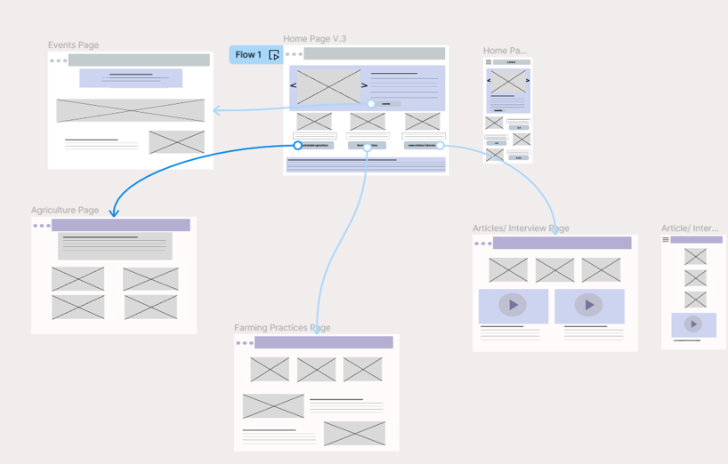
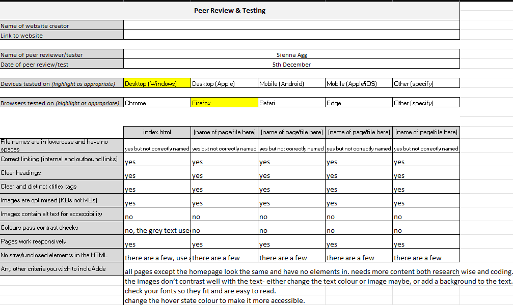

What was it?
This was my very first hand at code and making a wbsite. I chose to base my site around sustainability since it is a subject I find to be interesting and a burning topic nowadays and it should have more recogniion online.
My goal was to work wih a code template, given by GitHub, and to make it my own, so this challenged me to see how far I can push the code's boundries to make the website look completely different to what it began as. Eventhough it was nerve-racking to face code for the fist time, I was determined to explore the possibilites.
- Role: Designer & Developer
- Tools: Figma, VSCode, Photoshop
- Date: 2023/24
The Challenge
The main obstacle was facing HTML and CSS for the first time, it was quite overwhelming to work with and I could not make sense of the structure of the code and what the different elements you had to account for, such as, padding, margins ect. I also found it extremely difficult to let go of something going wrong. If something was out of place, not responding correctly I would work on it until it was to my liking; in which shows my determination but it costed me a lot of my time.
On the contrary, despite my commitment to make the website look exactly like my vision, some of it did not turn out this way. The carousel for example on the left, I spent so long editing a template of a code snippet to make the carousel have a different layout, which I achieved, but it was missing that polish and well, I ran out of time to do much more about it and I could not experiment more with the est of the parts of my website. So, this Project taught me a very valuable lesson on time management and that if something does not come out the way we want, it is okay to leave it and come back to it when there is other priorities.
Design Process
Research

Analyzed competitor UIs and gathered feedback from gamers about key frustrations.
Wireframes
Created quick low-fidelity wireframes focusing on a simplified navigation experience.
Testing
Tested with five users — navigation time improved by 45% over the original design.
Final Design
Video Walkthrough
Key Outcomes
- Reduced visual clutter and improved hierarchy.
- Enhanced discoverability of featured titles.
- Streamlined checkout flow and navigation.